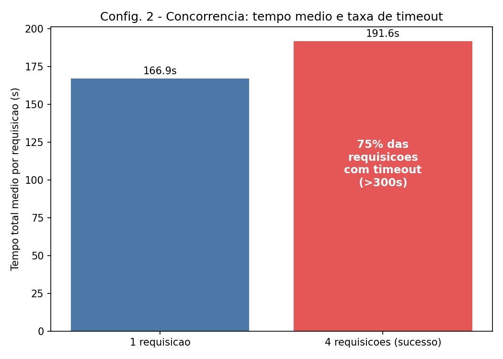
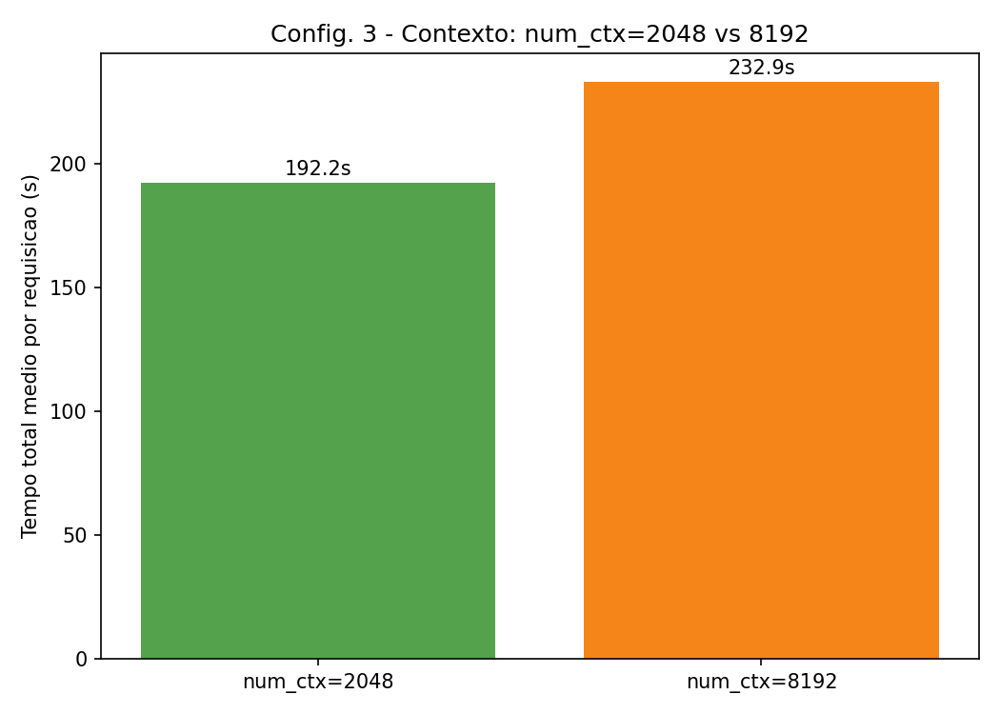

Discente: Leticia Cavalcanti
Modalidade: Individual
Trilha: A — Chat local: Ollama + Open WebUI
Modelo: Llama-3.2-3B-Instruct (GGUF, Q4_K_M)
Repositório: (preencher com a URL do GitHub, ex.: https://github.com/
Aplicações de IA generativa executadas localmente mobilizam processos, threads, memória, armazenamento, comunicação em rede, arquivos, logs, bibliotecas, runtimes e mecanismos de proteção do sistema operacional. Este relatório documenta a instalação, execução e análise experimental de um sistema local de IA generativa baseado em Ollama com a interface Open WebUI (Trilha A), relacionando conceitos de Sistemas Operacionais — processos, threads, chamadas de sistema e escalonamento — ao comportamento observado.
Pergunta norteadora: como a camada de aplicação, o modelo de linguagem, a quantidade de parâmetros, a quantização e a configuração de execução afetam processos, threads, uso de CPU, memória, armazenamento e responsividade de um sistema local de IA generativa?
llama3.2:3b).Inventário completo em data/ambiente_inventario.txt, coletado
com scripts/00_inventario_ambiente.sh em 2026-09-15.
ollama e open-webui), executados sobre a VM
Linux do Docker Desktop com backend WSL2, no host Windows 11.6.6.87.2-microsoft-standard-WSL2 (x86_64).nvidia-smi) — execução 100% em
CPU.ollama chegou a usar ~3,7 GiB durante
os experimentos com num_ctx=8192).llama3.2:3b ocupou 2,0 GB.llama3.2:3b (GGUF, Q4_K_M).Execução inicial: docker compose up -d baixou e extraiu as imagens (ollama/ollama ~3,56
GB comprimidos; open-webui) em ~6 minutos na primeira execução. O download do modelo
(ollama pull llama3.2:3b, 2,0 GB) levou 2min20s. Portas expostas: 11434 (API do Ollama)
e 3000 (interface web do Open WebUI, mapeada para a porta interna 8080). Nenhum erro ou aviso
relevante nos logs de inicialização dos dois containers.
Ver diagrama e descrição em README.md.
Evidências completas em data/ps_snapshots/, geradas por
scripts/02_processos_threads.sh.
ollama (PID 1, ollama serve), estado Ssl,
25 threads (NLWP), ~0,6% de memória do container.llama-server (PID 149, PPID 1),
estado Rl (rodando, multithread), com 9 threads próprias, consumindo ~91,5% de CPU e
~14,9% de memória do container no momento da amostra. O processo pai ollama (PID 1)
permanece com suas 25 threads originais, agora orquestrando a requisição.ps -eLf confirma a hierarquia: as 25 LWPs (light-weight processes) do PID 1 pertencem ao
runtime do Ollama (servidor HTTP, gerenciador de modelos), enquanto o comando completo do
processo filho revela os parâmetros de execução do llama-server: --model
/root/.ollama/models/blobs/sha256-..., -c 4096 (tamanho de contexto), -np 1 (1 slot de
processamento paralelo), --flash-attn auto, -b 512 -ub 512 (tamanho de lote/ubatch).llama-server sozinho concentrou ~91% de CPU do container
durante a geração — evidenciando que o ollama serve atua como processo supervisor/API, e todo
o trabalho pesado de inferência é delegado a um processo filho dedicado, criado sob demanda e
encerrado após a requisição.docker stats, amostra única) ao final da inferência: ollama
3,15 GiB / 5,79 GiB (54,4%), 36 PIDs; open-webui 853 MiB (14,4%), 31 PIDs — ver
data/ps_snapshots/05_docker_stats.txt.Resumo completo (strace -f -c -p 1, anexado ao container ollama durante uma requisição
controlada) em data/strace/strace-resumo.txt — 6.644
chamadas capturadas, 434 delas retornando erro (majoritariamente EAGAIN esperado em sockets
não bloqueantes). As quatro famílias mais relevantes:
futex, sched_yield, tgkill): 72,8% do
tempo total de CPU em chamadas de sistema foi gasto em futex (2.355 chamadas) — o
mecanismo do Linux para sincronizar as threads de inferência (produtor/consumidor de tokens,
pool de threads do llama.cpp) sem busy-waiting. sched_yield (293 chamadas) mostra threads
cedendo voluntariamente a CPU ao escalonador, comportamento típico de pools de threads
paralelas competindo por poucos núcleos.epoll_pwait, socket, accept4, connect, getsockopt/getsockname/getpeername):
8,9% do tempo em epoll_pwait (1.207 chamadas) — o loop de eventos do servidor HTTP do Ollama
monitorando a API local na porta 11434 e a conexão interna com o llama-server.read, write, openat, pread64, close, newfstatat, getdents64):
leitura do arquivo de pesos GGUF e de logs — read (863 chamadas, 3,0% do tempo).madvise): 66 chamadas, usadas pelo alocador para sinalizar ao kernel o padrão
de acesso às páginas que armazenam os pesos do modelo e o cache de contexto (KV-cache).nanosleep): 12,9% do tempo, 1.481 chamadas — indicativo de espera
ativa/polling controlado em partes do runtime.Essas evidências confirmam, na prática, que a maior parte do "custo" de uma inferência não está
em syscalls de I/O, e sim em sincronização entre threads (futex) — coerente com uma carga
de trabalho fortemente paralela em CPU, disputando os 4 núcleos disponíveis.
Foram executadas 12 rodadas mensuráveis, cobrindo três configurações, pelo menos dois tamanhos
de entrada (prompt curto e prompt longo) e pelo menos duas repetições por cenário, conforme
scripts/04_experimentos.py:
num_ctx padrão.num_ctx=2048 x num_ctx=8192, 2 repetições cada (4 execuções).Métricas coletadas por requisição (via campos da própria API do Ollama, ver
documentação oficial):
tempo total (total_duration), tempo de carregamento do modelo (load_duration), TTFT
aproximado (load_duration + prompt_eval_duration), tokens/segundo
(eval_count / eval_duration), além de uso de CPU/memória do container (docker stats) e
número de threads (ps -eo nlwp) por round.
Execuções realizadas em 2026-09-15, entre 16h46 e 17h27 (horário local), 12 rounds, 22
requisições individuais (18 concluídas com sucesso, 6 com timeout — ver Configuração 2). Dados
brutos em data/experimentos/resultados.csv (por requisição) e
data/experimentos/resumo_rounds.csv (por round); tabelas completas em
data/experimentos/tabelas_resumo.md.
Tabela 1 — Resumo por configuração/cenário (médias por requisição concluída)
| Configuração | Cenário | N | Tempo total médio (s) | TTFT médio (s) | Tokens/s médio | Erros |
|---|---|---|---|---|---|---|
| Config 1 — padrão | prompt curto | 2 | 9,80 | 0,57 | 6,57 | 0 |
| Config 1 — padrão | prompt longo | 2 | 188,75 | 2,33 | 5,17 | 0 |
| Config 2 — concorrência | 1 requisição/vez | 2 | 166,88 | 0,14 | 5,13 | 0 |
| Config 2 — concorrência | 4 requisições simultâneas | 8 (2 OK, 6 timeout) | 191,55 (só sucessos) | 0,15 | 4,98 (só sucessos) | 6 |
| Config 3 — contexto | num_ctx=2048 |
2 | 192,20 | 5,89 | 5,04 | 0 |
| Config 3 — contexto | num_ctx=8192 |
2 | 232,86 | 6,39 | 4,14 | 0 |
Tabela 2 — Uso de recursos por round (amostra pontual via docker stats + ps -eo nlwp)
| Round | Configuração/Cenário | Concorrência alvo | Wall time (s) | CPU container (amostra) | Memória container |
|---|---|---|---|---|---|
| 7 | Config 2 — concorrência=4 | 4 | 300,03 (timeout) | 55,15% | 3,38 GiB |
| 8 | Config 2 — concorrência=4 | 4 | 300,02 (timeout) | 74,76% | 3,52 GiB |
| 5–6 | Config 2 — concorrência=1 | 1 | 127–207 | 0,12–0,45% | 3,13–3,24 GiB |
| 9–10 | Config 3 — num_ctx=2048 |
1 | 188–196 | 0,00–0,40% | 2,75–2,82 GiB |
| 11–12 | Config 3 — num_ctx=8192 |
1 | 216–249 | 0,46–0,76% | 3,58–3,68 GiB |
Gráfico principal — efeito da concorrência:

Gráfico — efeito do tamanho de contexto:

Concorrência (Configuração 2): com 1 requisição por vez, os tempos médios (127–207s) ficam
na mesma ordem de grandeza da Configuração 1 com prompt longo. Ao disparar 4 requisições
simultâneas no host de 4 CPUs, apenas 1 de cada 4 requisições completou dentro do timeout de
300s em cada round (6 de 8 requisições — 75% — falharam por timeout). O uso de CPU do
container saltou para 55–75% na amostra pontual (contra <1% nos cenários sequenciais),
confirmando saturação de CPU: como não há GPU e o host tem apenas 4 núcleos lógicos, rodar 4
inferências llama.cpp em paralelo faz cada uma competir por fatias de CPU cada vez menores,
em vez de ganhar paralelismo real — a vazão (tokens totais gerados por unidade de tempo) piora
drasticamente, e a responsividade também piora (75% das requisições nem retornam a tempo). O
custo observado nos dados de strace (72,8% do tempo em futex) é coerente com esse gargalo:
threads gastam mais tempo se sincronizando e disputando CPU do que efetivamente calculando.
Contexto (Configuração 3): aumentar num_ctx de 2048 para 8192 elevou o tempo total médio de
~192s para ~233s (+21%) e o uso de memória do container de ~2,75–2,82 GiB para ~3,58–3,68 GiB
(+30%), mesmo mantendo os mesmos prompt e número de tokens gerados. Além disso, a primeira
requisição de cada novo valor de num_ctx teve load_duration não-nulo (6,67s e 6,36s,
respectivamente) — evidência de que uma mudança no tamanho de contexto força o Ollama a
recarregar o modelo com um KV-cache maior, custo que não aparece nas requisições
subsequentes com o mesmo num_ctx (load_duration≈0,001–0,004s).
Qualidade das respostas: todas as 18 requisições concluídas produziram respostas coerentes e
não vazias (critério adotado: resposta com mais de 30 caracteres úteis, coluna qualidade=OK
em resultados.csv); nenhuma resposta incompleta ou visivelmente incoerente foi observada nos
casos que não sofreram timeout.
O runtime do Ollama ilustra, na prática, conceitos centrais de Sistemas Operacionais: um
processo principal que atende requisições via sockets TCP (chamadas socket/accept/epoll),
um processo/thread "runner" responsável pela inferência (criado via clone, comunicando-se por
memória mapeada e sincronizado com futex), escalonamento cooperativo das threads de inferência
pelo CFS do kernel Linux, e uso de mmap para carregar o arquivo de pesos GGUF sem duplicar todo
o conteúdo em memória residente. A execução em contêiner acrescenta uma camada de isolamento de
namespaces e cgroups, que limita e contabiliza os recursos (CPU, memória) usados pelo processo
Ollama, visível via docker stats.
Ver declaracao_uso_ia.md.
Os experimentos confirmam que, em um sistema local de IA generativa baseado em Ollama, o
comportamento de processos, threads e uso de recursos depende fortemente de três fatores
testados. (1) Camada de aplicação e arquitetura: a Trilha A evidenciou uma separação clara
entre o processo supervisor (ollama serve, sempre ativo, 24–25 threads) e um processo de
inferência criado sob demanda (llama-server, ~9 threads, responsável pelo consumo intenso de
CPU), comunicando-se via API HTTP local. (2) Concorrência: em hardware limitado a 4 CPUs e
sem GPU, aumentar a concorrência de 1 para 4 requisições simultâneas não trouxe ganho de vazão —
pelo contrário, causou saturação de CPU e 75% de timeouts, um custo que só aparece sob carga
real e não é visível em uma única requisição isolada. (3) Configuração de execução (contexto):
um contexto maior (num_ctx 8192 vs 2048) aumentou tempo (~+21%) e memória (~+30%) de forma
proporcional, além de exigir recarregamento do modelo ao ser alterado. Em conjunto, esses
resultados respondem à pergunta norteadora: a responsividade e o uso de recursos de um sistema
local de IA generativa são determinados menos pelo tamanho do modelo em si (fixo, 3B parâmetros
neste estudo) e mais pela configuração de execução — concorrência e tamanho de contexto —,
que interage diretamente com as capacidades de escalonamento e paralelismo do sistema
operacional subjacente.
16. Por que a trilha escolhida é adequada à disciplina? A Trilha A expõe de forma direta processos e threads distintos (Ollama e Open WebUI), comunicação via API HTTP local (sockets), execução em contêiner (namespaces/cgroups) e persistência via volumes — cobrindo múltiplos tópicos centrais de Sistemas Operacionais em um cenário real de IA generativa.
17. Qual modelo foi selecionado, quais são seus parâmetros e por que foi escolhido? Ver Seção 2.
18. Como formato, quantização, contexto e tamanho afetaram armazenamento, RAM ou VRAM?
O modelo em GGUF Q4_K_M ocupou 2,0 GB em disco (ollama list). O tamanho do contexto
(num_ctx) teve efeito direto e mensurável na RAM: subir de 2048 para 8192 tokens elevou o uso
de memória do container de ~2,75–2,82 GiB para ~3,58–3,68 GiB (+30%), pois o KV-cache cresce
proporcionalmente ao tamanho do contexto. Trocar num_ctx também obriga o Ollama a recarregar o
modelo (custo adicional de ~6,3–6,7s de load_duration na primeira requisição após a troca).
Sem GPU disponível, não houve uso de VRAM neste experimento.
19. Quais processos e threads foram observados na inicialização e na inferência? Ver Seção 5.1.
20. Quais chamadas de sistema foram relevantes para carga, leitura de dados, comunicação ou logs? Ver Seção 5.2.
21. O aumento de concorrência melhorou responsividade ou vazão? Quais custos surgiram?
Não — piorou ambas. Com 4 requisições simultâneas em um host de 4 CPUs (sem GPU), 75% das
requisições (6 de 8) não completaram dentro do timeout de 300s; a única requisição concluída por
round não foi mais rápida que o cenário sequencial. O custo dominante foi contenção de CPU (uso
subiu para 55–75% na amostra, contra <1% em execução sequencial) e maior tempo gasto em
sincronização de threads (futex, 72,8% do tempo de syscalls medido via strace). Ver Seção 8.
22. Houve competição por CPU, memória, armazenamento, GPU ou rede?
Sim, principalmente por CPU: os 4 núcleos lógicos do host foram o gargalo evidente na
Configuração 2 (concorrência=4). Houve também competição por memória de forma mais branda na
Configuração 3, onde contextos maiores aumentaram o uso de RAM em ~30%. Não houve GPU disponível
para competição, e o armazenamento (SSD/overlay Docker) não se mostrou gargalo nos testes
realizados. Rede não foi um fator limitante, por se tratar de comunicação local
(localhost/rede interna dos containers).
23. Como entradas ou contextos maiores afetaram desempenho e recursos?
Prompts mais longos (Configuração 1: curto x longo) aumentaram o tempo total de ~9,8s para
~188,75s (a resposta também é proporcionalmente maior — de ~60 para ~900+ tokens gerados) e o
TTFT de ~0,57s para ~2,33s. Contextos maiores (Configuração 3: num_ctx 2048 x 8192) aumentaram
o tempo total médio em ~21% e o uso de memória em ~30%, além de introduzir um custo único de
recarregamento do modelo ao trocar o tamanho de contexto. Ver Seção 8.
24. Como a arquitetura local contribui para privacidade, disponibilidade e controle de dados? Por rodar inteiramente em containers locais, sem chamadas a APIs externas, os dados de conversas e documentos não saem da máquina da discente; a aplicação também continua funcional offline (após o download do modelo), sem depender de disponibilidade de um provedor remoto.
25. Quais limitações ameaçam a validade dos resultados? Ver Seção 10.
26. Quais informações geradas por IA precisaram ser verificadas, corrigidas ou rejeitadas? Ver declaracao_uso_ia.md.
URL do vídeo: (preencher — ver VIDEO.md)